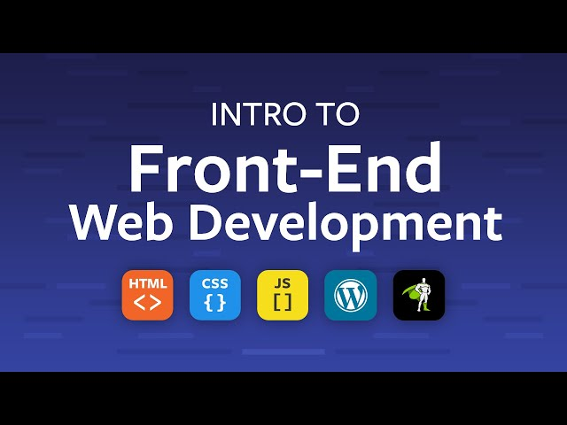

FRONT END WEB DEVELOPER

Front-End Developer:
The part of a website that the user interacts with directly is termed the front end. It is also referred to as the ‘client side of the application.
It includes everything that users experience directly: text colors and styles, images, graphs and tables, buttons, colors, and a navigation menu. HTML, CSS, and JavaScript are the languages used for Front End development.
Responsiveness and performance are the two main objectives of the Front End. The developer must ensure that the site is responsive i.e. it appears correctly on devices of all sizes no part of the website should behave abnormally irrespective of the size of the screen.
Front End Languages
The front-end portion is built by using some languages which are discussed below:
-
HTML: HTML stands for Hypertext Markup Language. It is used to design the front-end portion of web pages using a markup language. HTML is a combination of Hypertext and Markup language. Hypertext defines the link between web pages. You can learn this language with Geeksforgeeks Advanced HTML – Self-Paced course and master the concepts of advanced HTML.
-
CSS: Cascading Style Sheets fondly referred to as CSS is a simply designed language intended to simplify the process of making web pages presentable. CSS allows you to apply styles to web pages. Also, if you want to enhance your skills then enroll in Geeksforgeeks CSS Foundation – Self-Paced course and learn all new concepts of CSS.
-
JavaScript: JavaScript is a famous scripting language used to create magic on sites to make the site interactive for the user. It is used to enhance the functionality of a website to run cool games and web-based software. Applicable in both front-end and back-end, Javascript is key to becoming a good developer. So start your web-development journey with Geeksforgeeks JavaScript Foundation – A self-Paced course today.
There are many other languages through which one can do front-end development depending upon the framework for example Flutter uses Dart, React uses JavaScript and Django uses Python, and much more.
Front-End Frameworks and Libraries:
-
AngularJS: AngularJs is a JavaScript open-source front-end framework that is mainly used to develop single-page web applications(SPAs). It is a continuously growing and expanding framework which provides better ways for developing web applications. It changes the static HTML to dynamic HTML. It is an open-source project which can be free. It extends HTML attributes with Directives, and data is bound with HTML.
-
React.js: React is a declarative, efficient, and flexible JavaScript library for building user interfaces. ReactJS is an open-source, component-based front-end library responsible only for the view layer of the application. It is maintained by Facebook. Moreover, React Js makes Front-end development very easy. You can now develop industry-ready Web Applications by enrolling in Geeksforgeeks React JS (Basic to Advanced) – A self-Paced course.
-
Bootstrap: Bootstrap is a free and open-source tool collection for creating responsive websites and web applications. It is the most popular HTML, CSS, and JavaScript framework for developing responsive, mobile-first websites.
-
jQuery: jQuery is an open-source JavaScript library that simplifies the interactions between an HTML/CSS document, or more precisely the Document Object Model (DOM), and JavaScript. Elaborating on the terms, jQuery simplifies HTML document traversing and manipulation, browser event handling, DOM animations, Ajax interactions, and cross-browser JavaScript development.
-
SASS: It is the most reliable, mature, and robust CSS extension language. It is used to extend the functionality of an existing CSS of a site including everything from variables, inheritance, and nesting with ease.
-
Flutter: Flutter is an open-source UI development SDK managed by google. It is powered by the Dart programming language. It builds performant and good-looking natively compiled applications for mobile (Ios, Android), web, and desktop from a single code base. The key selling point of flutter is flat development is made easier, more expressive, and flexible with UI and native performance. In march 2021 flutter announce Flutter 2 which upgrades flutter to build release applications for the web, and the desktop is in beta state.
Some other libraries and frameworks are Semantic-UI, Foundation, Materialize, Backbone.js, Ember.js, etc.